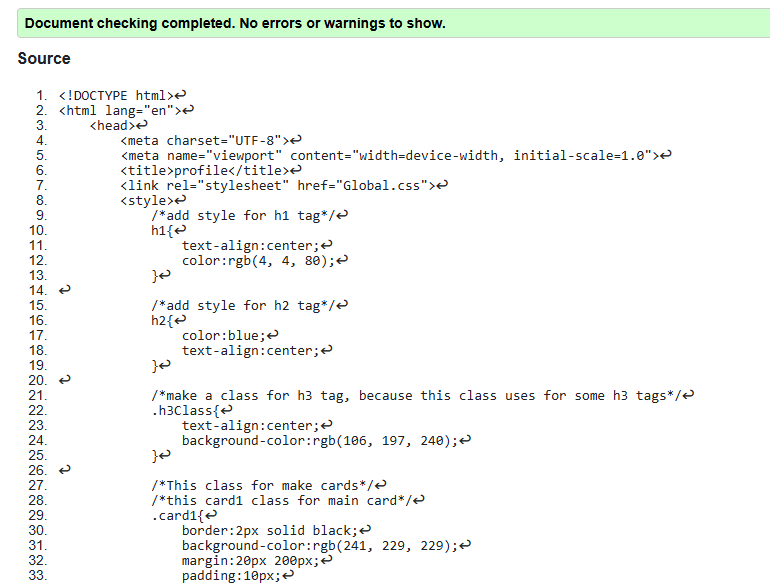
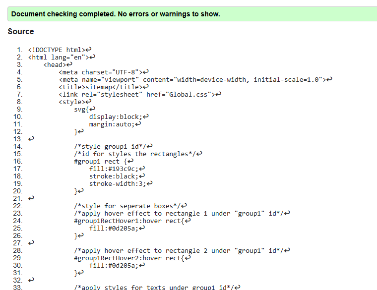
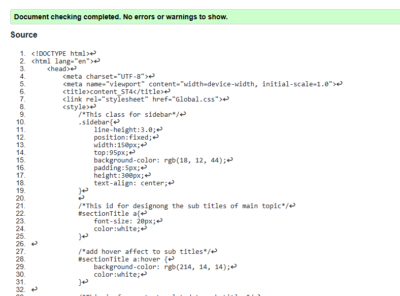

Profile page validation report
The validation of my Profile page was completed successfully using the W3C validator, with no errors or warnings detected. This confirms that my HTML code follows proper web standards and syntax. I ensured correct use of structure, tags, and attributes to avoid common mistakes. Validation helps improve browser compatibility and accessibility of the page. Overall, the result shows that my implementation meets good web development practices.

Back to Page Editor page
Sitemap Page validation report
I checked my Sitemap page using the W3C validator, and it passed with no errors or warnings. This means my HTML and SVG code follow the correct web standards and are properly structured. While creating the sitemap, I made sure to use correct elements, links, and attributes. Validation help make the page more compatible with different browsers, improves accessibility, and increses the overall quality. Overall, this result shows that my sitemap is built correctly and follows good web development practices.

Back to Page Editor page
Content Page validation report
The validation of my Content page was successfully completed using the W3C validator, with no errors or warnings detected. This confirms that my HTML structure and elements are correctly implemented. i ensured proper use of headings, internal links, and semantic tags throughout the page. Validation helps improve accessibility, readability, and browser compatibility. Overall, the result shoes that my page meets good web development standards.

Back to Page Editor page
Page Editor link for student 4 content page